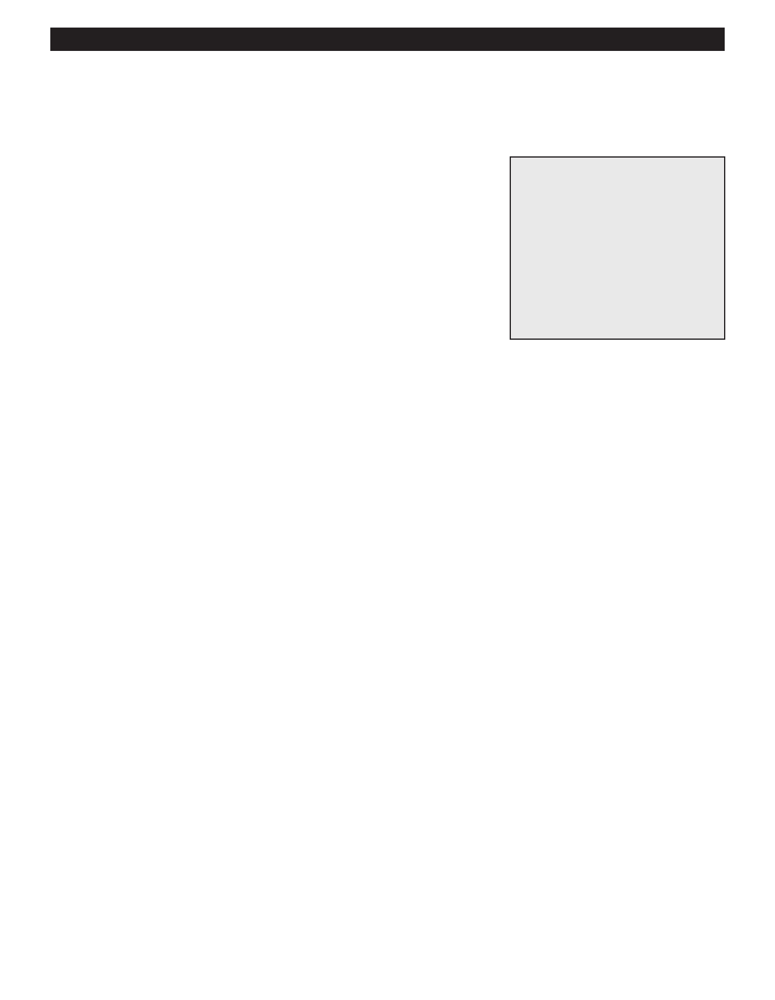

PA RT I C I PA N T R E S O U R C E G U I D E
Replacing a Faucet
If the parts of a faucet are worn or broken, replace the faucet and its supply tubes.
Safety
Tools and Materials Needed
Be careful using a putty knife.
Replacement faucet
You may want to wear hand and eye protection.
Two flexible supply tubes (if
tubes are not pre-attached to
the new faucet)
Plumber’s putty
Tongue and groove pliers
Putty knife
Adjustable wrenches
How-to Steps: Replacing the Faucet
1. Shut off water to the faucet.
2. Unscrew (counterclockwise) the nuts connecting the water supply pipes to the faucet.
3. Unscrew (counterclockwise) the lock nuts to faucet.
4. Pull off the faucet.
5. Clean off the area where faucet was mounted.
6. Assemble the new faucet and put putty around base.
7. Insert the faucet and push it down to seal it.
8. Screw (clockwise) the lock nuts to secure the faucet to the sink.
9. Screw (clockwise) the nuts connecting water supply pipes to the faucet.
10. Wipe away the excess putty from base of faucet.
11. Turn on the water and check for leaks.
Note: Check putty container to ensure it is safe to use on the surface of the counter, it is NOT safe to use putty,
use a silicone caulk to seal the faucet to the counter.
Notes:
35